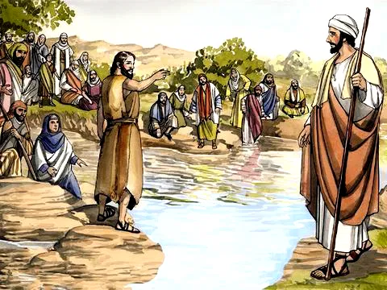
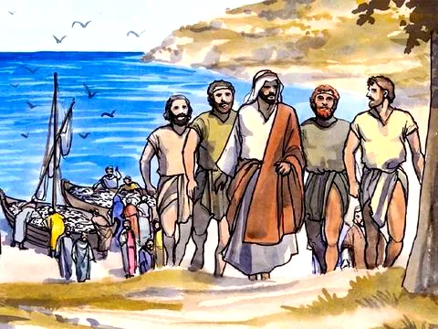

Jesus Escolhe os Primeiros Discípulos
Referências Bíblicas: Mateus 10:2-4 , Marcos 3:13-19, Lucas 5:1-11, 6:12-16
João Batista era um profeta conhecido nos tempos de Jesus. Ele pregava que o Reino de Deus estava próximo. Por isso as pessoas deveriam se preparar para a chegada de Jesus. Elas deveriam mudar o seu mau comportamento, e receberem um batismo de arrependimento.
Certo dia quando Jesus ia passando, João Batista disse: Vejam! É Ele o Cordeiro de Deus! Dois seguidores de João foram logo seguindo Jesus. Um desses era André, ele correu em busca de seu irmão, Simão Pedro, para que ele também conhecesse a Jesus. Vamos, vamos Simão! Achamos o Senhor Jesus, venha vê-lo. No dia seguinte, Jesus foi para uma cidade chamada Galiléia. Na viagem encontrou a Filipe e disse: segue-me! Filipe também levou seu amigo Natanael para conhecer Jesus. Noutro dia, Pedro e André estavam pescando. Então Jesus chamou: Venham comigo e farei de vocês pescadores de homens! Eles deixaram tudo na praia e seguiram Jesus. Ele também chamou Tiago e João para se juntarem ao grupo. Jesus também encontrou um cobrador de impostos, chamado Mateus (Levi) e disse: Segue-me!
Depois disso, Jesus subiu a um monte e passou a noite em oração a Deus. Quando amanheceu, ele chamou seus discípulos e escolheu doze ajudantes: os irmãos Simão Pedro e André, Tiago e João, Filipe e Bartolomeu, Tomé e Mateus, Tiago e Simão Zelote, Judas Tadeu e Judas Iscariotes. Estes estariam mais próximos e seriam enviados a anunciar os ensinos de Jesus a todo o povo.
Moral da História
Todos somos chamados a seguir Jesus. Quando Ele nos chama devemos estar prontos e dizer, "Sim, Senhor, estou aqui! Te seguirei!" Ao seguir a Deus vamos conhecendo melhor como é a sua Palavra e como podemos cumprir a sua vontade. Seguir o exemplo de Jesus sempre nos ajuda a cumprir um bom propósito na vida!